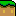
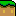

We had a look at some of the basics of making a game using the Processing.js game library, so let's kick it up a notch by just getting down and making our own Super Mario game. When we're done with this part of the tutorial, we'll have a game with koopa troopers, platforms that we can jump up through but not fall down through, a hole with terrible muncher plants, coins, including a mysterious dragon coin, a giant banzai bill bullet that comes out of nowhere, and even some advanced things like not actually putting enemies in the level from the start, but only just before you get to where they're supposed to be.
And it's going to be pretty sweet. Let's get started!
Okay, almost. Before the first stop, we'll need a game with at least one level which has at least one level layer so that we can even put mario somewhere. Just like we did last time. So let's get cracking:
This sets up an empty, but for all intents and purposes functional, game world that we can stick Mario in:
So now we can make Mario. First, let's think of what we want Mario to be able to do:
So, let's find some pictures for all these different things:
You'll notice that some of these states use multiple pictures. This lets us create the illusion of "animation": if we loop through the images quickly enough, it'll see like Mario's animated, and that's good! So let's make a Mario!
And then let's add a mario to our world:
This is nice and all, but like the previous tutorial, nothing's happening. Mario just hangs there. So, let's make things a little more interesting. First, let's introduce some gravity.
We introduce three new global values:
The "down force" value determines how much players and NPCs etc will be "pushed down" towards the ground when they're not standing on anything. The "acceleration" value determines how much they will accelerate while they're falling, so that the longer they fall, the faster they fall, and the "dampening" value determines what happens when we give players or NPCs an impulse (= some speed). With dampening set to "1", the amount of speed is the same from one frame to the next. "0.5" will halve the amount of speed per frame, and "0" will kill off speed complete from one frame to the next.
Of course, we also need to make sure those forces apply to Mario, so we modify our constructor:
Excellent! now Mario's on the ground... but.. still not doing very much. So, time to hook up the controls. We will be using "WASD" controls again, so that 'W' means "up", 'A' means "left", 'S' means... ... well we're not actually going to use 'S', but 'D', means "right".
At this point, Mario is still fairly boring. Sure, we can control him, but none of those fancy states are being used, so let's refind the input handling (you may remember binding keys to motion controls in the previous tutorial) so that when we walk left or right, we actually show as running, and when we jump, we actually look like we're jumping.
hang on to your pants, this one's a biggy:
So what does this code do? Let's look at the three parts that this code can be looked at, separately. First, the first "if" statement.
The first "if" statement checks for the 'A' and 'D' keys, which correspond to walking left and right, respectively. The trick here is that we want to be able to press both keys at the same time, without one of them winning, so we check for the keys in two steps: 1) are either A or D pressed? If so, 2a) is A pressed, and 2b) is D pressed. If A is pressed, we will be walking left, so we give Mario an impulse of -2, horizontally, and 0, vertically (because running is a horizontal-only affair). However, if you scroll up to the pictures we had for running, they're for running to the right. In order to make sure we run to the left with the pictures oriented correctly, we need to make sure that they are flipped.
If D is pressed we do roughly the same thing, but in the opposite direction: a horizontal impulse of 2, rather than -2, and we make sure the pictures are NOT flipped, so look like they run to the right. Finally, at the end of the first "if" block, we make sure that Mario's state is indeed the running state, by setting the current state to "running". Makes sense, really!
Then, the second "if" block. In this block we check for the 'W' key, which is our jumping key. However, we can't "just jump", there's a few conditions that need to be met. First, we can only jump if 'W' is pressed. Okay, so that one is obvious. Second, we can only jump if we're not already jumping right now. This prevents us from jumping while we're already jumping. Because that would just be weird! Finally, we also don't want to jump unless we're actually standing on something. This last one, especially, is important. We don't want to be able to jump in mid air while we're falling from a platform, for instance. Or rather... for the moment, we don't, but once we're done with this game, maybe we actually do want to change that... hmmm... anyway, on to the rest of the code: All those conditions are combined with "&&" which is programming-code for "AND". So, we have if(something AND something AND something) { [then do this] }. We don't actually use the word "AND" for it, but use "&&" because that's how programming languages have been doing things for decades, so it's one of those things you quickly learn to use and expect everywhere.
So with all those conditions met, what do we do? Well, we give Mario a jolt of speed upwards, -35 in fact, and we make sure that his state is the "jumping" state, so that it looks like he's jumping. Perfect! So what's with that last block?
The last block checks "are we actually pressing any key?". If we're not pressing left, or up, or right, then it's a good idea to make sure that Mario looks like he's just standing there, so we set his state to "idle" if no relevant keys are pressed. So with all that work done, what does Mario look like?
Hmm... that's actually a bit too fast. By default, the game library will run our games at 60 frames per second. That's really high, so let's set that to 30 instead:
Now what does it look like?
That's better. On to making this prettier!
While the input handling we have works, you might notice that it's doing funny things when you jump and run left or right at the same time. So let's fix that. Instead of making jumping a normal state, let's make it special. The game library lets you add specific durations to states, so that when you change to them, they last for a specific number of frames, and then give you a signal that they're done. That way, we can prevent Mario from changing states or triggering behaviour while he's jumping. This means we have to do two things: 1) say that jumping is a special state, with a specific duration, and 2) make sure the input handling takes into account that we might not be able to change states while Mario is jumping. Let's-a-di-go!
As you can see, the only thing we have to change for the jumping
state is saying "this state has a duration". In this case, we've set
it to 15 frames (and since the game plays at 30 frames per second,
that means a jump lasts half a second) and that's all we have to do!
Then, in our input handling, we can make use of two special things.
First, the active word means "the currently active state".
If we've set the current state to "idle", then active points
to the idle state. If we've set it to "jumping", then active
points to the jumping state. That's pretty useful, because it lets us
check whether the "current state" is one of those special states that
we shouldn't interrupt: active.mayChange() gives us a "yes"/"no"
answer to the question "is this a special state, and if so, has it finished
so that we may change to another state already?".
Making use of active.mayChange(), we can now say: "IF
we're allowed to change states, then check if they running keys are
pressed. If so, change state to running. Otherwise, change it to just
standing around, being idle". So now we should be able to do strange
super-power jumping anymore if we jump and move to the left or right
at the same time:
So, now that we have a reasonably well-controlled Mario, I think it's time we jazzed this game up a little with some good looks. What do you think?
Let's start with that background. It's boring, right? I mean, sure, it's a pretty color but it just... a plain color. How about instead we add some background in the Mario style?
Let's add the following background:
Adding a background means treating it like a special kind of sprite, and adding this to the list of not-moving background sprites:
The important line is that addBackgroundSprite(...) line. This says
"Add something, which is inside the ( and ), to the list of background sprites." with
the word "static" simply meaning "things that don't change". In this case we add
what is known as a "Tiling Sprite" - a picture that is repeated to fill a certain area
of the screen. Since we want the background to fill the entire level, we use a picture
of a typical Mario sky line, and make it repeat itself starting at (0,0), which is the
upper left corner of the level, all the way down to (width,height), which is the lower
right corner of the level.
We could keep it at that, but since we're updating the background anyway, let's make sure that Mario can't run out of the level:
These two extra boundaries sit *just* outside the level on the left and the right, like what we did in the previous tutorial to keep our "Thingy" inside the screen. Except this time our Thingy is a Mario! =D
And because we can, let's make one more change: a background is nice, but it would be even better if we could actually see that it repeats, by making the level wider than a single screen. So... let's do that!
Two things to note are that in our initialize method,
we now make a MarioLevel that is twice as wide as the screen. In order
to make sure that game library doesn't get confused, we then also
tell it that the viewbox for this game starts at (0,0),
which is the upper left of the screen, and is only screenWidth
wide, and screenHeight high, so it is exactly the same
size as our game "window". If we left it at this, we would see Mario
run to the right and then disappear, but the viewbox is special: it
can follow a player around. So we make one final change:
We've done two things here. First, we've made the level layer always "know" what
the mario word refers to. Now, if we refer to mario in any
of the methods of the level layer, it will know what to use. That's important, because
the viewbox needs to know who it should be following around when the level layer is
being drawn. That's the second thing we changed. Normally a level layer has a premade
method called "draw" that it kind of "inherits" from the game library. But, it only
draws the level layer, it doesn't do anything else. If we want to make the viewbox
follow Mario around, we'll need to set up instructions that say "do what you normally
do, but ALSO follow mario!". So that's what we do: super.draw() is the
line that says "do what you normally do", namely call the "draw" method that the level
layer already knows about, because it is part of its super class (remember super
classes from the previous tutorial?). Then the next instruction is to the viewbox:
viewbox.track(parent, mario) tells the viewbox to follow mario around,
using the visual properties of the level that the level layer is in, which the
level layed calls its parent. Whenever the level layer needs to
point to its owning level, we can use the word parent and the game
library will know what to do. Especially now, that's pretty handy.
Okay! That's enough! We added background. We added walls to the left and right. We made the level bigger than the screen. We (hopefully!) made the screen "follow" Mario... what does it look like already!??!
Now that's what I call pretty cool! We can run around and the background will scroll along, until we reach either end of the level and we simply walk into the side walls.
So... how about we make it even cooler?
We've been putting it off long enough: having Mario walk on a thin little line works, but things will look a lot better if we make him walk on some actual ground. Or at least, if we make it LOOK as if he is. Let's start creating some ground, shall we?
Ground is actually quite similar to adding background. Since the only thing that determines whether Mario's "on something" or not is the (normally) invisible boundaries (which we can see right now because we're cheating and we're drawing them, even though normally you don't), we can actually just leave the boundary where it is, and set up some more background that makes it look like there's ground underneath the boundary line.
In order to make ground, we're going to use a few images. Two, in fact. One to look like the top soil, with grass, and one that fills in the region underneath:
 +
=
+
=
The trick is to lay down a row of top soil, and then fill in the rest with filler. We've actually already seen how we are supposed to do this: we use a TilingSprite. First, let's define a method for "laying" ground:
This method expects four values when we use it: the first two are the top-left x/y coordinates for the ground we'll place, and the last two are the bottom-right x/y coordinates, so we're supposed to draw ground in the rectangle between those two coordinates. The top-most row has to be grassy ground, so we use the grassy picture, and make a TilingSprite that runs from (x1,y1), which is our indiated top left corner, to (x2,y1+16).
What do those values mean? Well, x2 is the horizontal coordinate for the right-most edge of the rectangle we want to fill. So that one's pretty easy. "y1+16" means "the top coordinate value, plus 16 pixels". We add 16 pixels because we know the picture for the grass is 16 pixels high. So we want to draw a row of grass that starts at (0,0) and is exactly 16 pixels high, and the normal width wide.
After that, we fill the rest with filler pictures. This doesn't start at (x1,y1), but at (x1,y1+16), because we need to start at the same horizontal position, but 16 pixels lower (or we'd be drawing filler on top of the grass!). And then it has to be wide enough to reach x2, horizontally, and high enough to reach y2, vertically.
Finally, because ground acts as something Mario can stand on, we add a boundary that runs along the top of the grass, so that Mario has something to stand on. And with that, we add some ground to our level layer:
Now we'll have ground running across the screen, from 32 pixels "outside" the screen on the left, to 32 pixels "outside" the screen on the right, filling an area with height "height of the screen, minus 48 pixels" to "height of the screen". What does that look like? Well, this:
What a difference some ground can make!
There's another thing we can do that also makes a neat difference, and that's adding a second layer of background that looks like it's farther away, so that when we walk, it moves slower than the normal background.
We can add "parallax", or the concept of faking distance by tricking the eyes into believing there's distance by making things that should seem "close" move fast and things that should seem "far" move slolwy, by adding new layers to our level. We're going to make it look like we have more background in the distance, so we'll add a new layer behind the main layer that has Mario on it. In fact, the code for it is not very long, can you tell what it does?
The important part is that new BackgroundLayer class, which does something
special. Unlike a normal layer, such as the MarioLayer, the BackgroundLayer
has a more elaborate call to tell its super class what's up: it gives it seven values instead
of one! The first value is the same as for normal layers: the Level that this layer should
be in. So far so good. Then, it tells it what that level's width and height are. This is important,
because those are needed to do something intelligent with the following four values: the first
two are "shifting" values, which let us say by how much this layer is shifted left or right,
as well as up or down. We don't want that right now, so we keep both of those zero. Then,
the two values after that tell the layer by how much it is scaled. This is very important!
To make it look like this layer is farther away, we want it to move slower than the main
level layer with Mario in it. Since we can't tell layers how fast they need to move, we
instead tell them that they are bigger or smaller than the main level. This makes the game
library squash or stretch the level, so that the start and end match up -- if we
add a layer that is larger than the main layer, it will be squashed, and it'll look
like it scrolls faster than the main layer. And of course the other way around; if we add
a layer that is smaller, it will be stretch, and will look like it's scrolling slower. So
that's what we do, we say that this new background layer is only 0.75 the size of the
main layer. So it should scroll slower. Let's find out:
go ahead, make Mario run to the right. Notice how our new background moves slower than the one we already had? Does it make it look like this new background is farther away? Cool, eh?
Now we have a great start for a real game: we have a Mario, we have cool backgrounds, and we have some ground to run on. Time to start adding finishing touches, what do you say?
Usually, a "platformer" such as the game we're making is called, has "platforms" that you can jump on, and from. Of course, our game doesn't have these... yet! But we can add them pretty easily by using the same idea as before: the part of a platform that we can stand on will be represented by a boundary, and everything else will just be a backgroud image, of course placed so that it looks like there is a platform. We'll be adding two types: a slanted platform, and straight platforms.


 


For the slant, we'll use a single image, and the code is pretty simple:
For the horizontal platforms we're going to put in a bit more work, using the same trick that we used for the normal ground: if we treat it as six images (three for the top soil, and three for the filler below it) then we can make any sized platform by always drawing the top left and right corners, and bottom left and right corners, and then "filling in the space between them " with the bits that go in the middle:
You may be wondering what that lc.align(LEFT, TOP); does.
By default, sprites are placed with their center point wherever you tell them
to position to. If we call setPosition(0,0) and the sprite is
a 16 by 16 pixel image, then 8 pixels will be on the left of (0,0), 8 will be
on the right, 8 above, and 8 below. Sometimes, that's not useful at all, and
you want to change that so that if you put an image at (0,0), the entire image
is to the left, right, top or bottom of that coordinate. In those cases, we
can use align(...,...) to change the default placement. In this
case, we want the image's left side, and top, to be aligned with the coordinate
we give its setPosition, so we say align(LEFT,TOP)
(we have to tell it how to do horizontal align first, and then vertical align).
So, not very complicated code, just "a lot of it" to make something really
useful happen: After we define our function addGroundPlatform we
can call it as many times as we like to add platforms to our level. In the
above code, we added six platforms, and then a little above that we added
three slanted platforms, so... what does it look like?
That's more like it! Now we're starting to make a real game. Of course, there's still stuff missing. We want treasures, and enemies, and a way to win. At the least. So let's start adding those things in shall we?
In the game library, treasure is a form of "pickup". Pickups are things that can be picked up by either players or NPCs (non-player characters) by walking into them, and when they do, "something" can happen. Of course, we're in control, so what happens is up to us. Very handy.
If you've ever played a mario game, you might known that mario likes to collect coins, of all sizes and colors. In our game, we'll give him two different kinds of coins to pick up: normal coins, and the mysterious dragon coin:


In order to make the coin pickups, we start by making a master "Mario pickup"
thing, that we can use as a superclass for every pickup we're going
to make in our game:
While this code doesn't do a great deal, it'll let us group things as "Mario Pickups", and that will become handy if we ever introduce a class of pickups that aren't for Mario.
So, let's write our coin pickups. They're pretty straightforward, so here goes:
That's it, that's all we have to define. Now if we want to use them in our
game, we simply make new Coin(...,...) or new DragonCoin(...,...)
and then add them to our list of pickups, for the player only:
The addCoins function is a convenient function that lets us add a string
of coins starting at position x/y and spanning a width of w.
We use the step value to space out our coins, using 16 pixels as distance
from one coin's center to the next coin's center, and then we start adding coins "for the player only",
as is obvious from the addForPlayerOnly(...) function name. The result?
Why, let's play our updated game and see for ourselves:
As you can see, we can pick up coins by running into them. If we want, we can make Mario's score go up whenever he picks up a coin, but we're going to do that later because it requires working with something called a "HUD", which is the information that you get about your game like score, health, time remaining, currently equipment, and all that kind of stuff. We'll be adding that in in the next tutorial.
Instead, we're going to move on to make this a proper game... it's time for......
Yes, it's time to add enemies to our game. Just running around collection coins gets a lot more challenging if you're trying to not hit an enemy at the same time. So let's add the old Mario favourite: the Koopa Trooper.
Koopa troopers are very much like Mario: They have states and need to switch between them when they do things, so probably not surprisingly, defining a Koopa trooper is very similar to defining Mario. Except we don't have to worry about putting in input handling, because we're not going to control. (Although, wouldn't it be cool to play as the enemy? Maybe we'll do that in a next tutorial!)
And then we add it just like we add everything else:
That's pretty good, but it's a bit incomplete. Let's try to play this:
We don't get hurt! This enemy is not dangerous! And he's a bit dumb, after walking into
that wall on the left he just triest to keep walking left. So clearly, we need to teach it
some more things. First, let's fix that "I have no idea what a wall is" problem. When actors
(players or NPCs) hit something, a special function called gotBlocked is called
by the game library. Normally, this function does "nothing", so when you hit a wall, nothing
actually happens, other than that you stop. But, for our Koopa trooper, we want it to realise
that it can't walk any further, and has to turn around. No problem:
There, nice and simple. The if (b.x == b.xw) code checks whether a boundary
is vertical or not: for vertical lines, the x start and end coordinate is the
same value, with only the heights at the start and end being different, so we simply check
"is the starting x value (b.x) the same as the ending x value b.xw)?
If so, reverse direction". And we reverse direction by changing the uniform force that acts
on our Koopa trooper. To make it get 'pushed' left we use -0.25 as a horizontal force,
so to make the Koopa trooper get 'pushed' right, we can reverse it to 0.25 instead,
and flip the Koopa trooper's sprite. Job done!
And now, let's make our enemies dangerous. This requires adding in the interaction between Mario and the Koopa trooper: Mario should be able to squish them, and Koopa troopers should be able to defeat Mario. So we'll be changing both classes.
In order to make Koopa troopers dangerous for Mario, we need to make sure "something" has to happen when Mario and a Koopa trooper touch. Luckily, the game library already has a function in place for that, we just need to fill it in.
This is the start of the changes we'll have to make, but a good one: if we touch a Koopa trooper, we die.
Of course while Koopa troopers dying and leaving the game's not that big a problem, if we die we want to restart the game. Right now, that doesn't happen, so we'll need to add in one more bit of code to make everything work the way we want:
We introduce a new global ("callable from anywhere in the code") function called
reset(), which basically wipes everything, and then rebuilds our level,
with a new mario, koopa trooper, coins, and everything else we say should get built
when we make our MarioLevel.
So now if we touch a Koopa trooper, we will lose, and then the game restarts. Let's test:
That works pretty well, but it's pretty unfair. Koopas can kill us, but we can't kill them. Let's level the playing field.
In the classic Mario games, most enemies can be defeated by jumping on top of them. So this requires two changes: Mario needs to know from which direction he's hitting a Koopa trooper, and Koopa troopers need to be squishable. Let's get cracking:
Here we see some math. Rather than just telling us which of the four directions left, right, top, or bottom we hit something at, the game library gives us the actual angle at which we hit another actor. That's really useful, but also makes it a little hard to figure out what "real" direction we're coming in on. If you don't understand what happens in the above code, that's okay. I'll try to explain it here:
For most things, angles don't go from zero degrees to 360 degrees, like you might be used to, but they use "radians". Using degrees, there are 360 degrees to a full circle. Using Radians, there are 2×π "degrees". π is actually a number, but it's impossible to write without using a million billion decimal numbers, so we use a letter for it instead. Its value is roughly 3.14, and is the value you get if you draw a circle with a diameter of one half. (one half meter, one half foot, doesn't really matter). If you measure how long the actual circle is, the answer is π. For angle measurement, we actually use a special circle called the "unit circle", which has a diameter of two. (again, two meters or two feet, or two inches, doesn't matter). This circle has a diameter of two times π.
If we look at this unit circle, and mark the values around the outline of the circle, then at the far right, the value is 0. Moving clockwise along the circle, the bottom-most value is half π, the far left is π, the top is one and a half π, and then when we get back to where we started, we get to two π, which is the same as zero. This may sound odd, but think of it as doing the same as a clock. Once we get travel along the clock's numbers, we end up at the start and the numbers "reset". That happens here too.
So, if we want to come jumping in from "the top", expressed in this idea of radians, we want to come in with an angle somewhere between π and two π (somewhere between "left" and "right"). That's what the above code does.
But, if we use that code, we still need to make the Koopa trooper actually get squishes.
Getting squished will do two things. First, if we are a normal Koopa trooper, our shell protects us. Rather than being squished dead, we only lose our shell. No biggie. But, if Mario squishes us again, we're toast. So the code does this too:
if (active.name != "noshell") checks whether we already lost
our shell or not. The != means "is not", so if our active state
is not the "no shell" state, we simple set the current state to "no shell",
and exit the squish function. We don't need to do more.
However, if we ARE in the "no shell" state, we die. As an actor in
the game, that means we need to be taken out of the game, so that's what the
removeActor() function does for us. Any actor (player, NPC, pickup, etc)
that calls this function gets taken out of the game, and for all intents and
purposes no longer exists. That's what I call being dead! O_O
Let's play this game!
So far we've been so caught up in adding cool things that we completely forgot that the point of a game is to win it. So how do we win at this Mario game? Different Mario games have different ways to win or exit a level, so let's use the old school solution: a goal post that we need to run through, with a goal line rope that goes up and down.
To make this happen, we'll combine some of the things we've already to make our game:
We'll use three images for this:


As you may have guessed, we'll add the back goal post to the list of many background images we're already using, and hopefully predictably, we can add the frong post to the list of "foreground" images:
So far so good, except for that last line. It says we're adding a Rope
to the list of for-player-only things... is it a Pickup? Well, if you remember the description
of pickups, they are things that players can walk into, to make "something" happen,
and that's exactly what we want! When Mario runs into the rope, we want him to win
the game, so we're going to make a new pickup that looks like our rope:
You might have noticed that this is a bit more work than the other pickups, because we want this rope to move up and down. We do this by giving the sprite "path lines" over which it can travel. The code above shows how to make it move up and down, but we can also scale and rotate over paths. Those "1,1,0," that you see four times (twice for up, and twice for down) mean "scale horizontally by 1.0, scale vertically by 1.0, and rotate by 0 degrees", so our sprite will look the same at the start of its path as it does at the end of its path, for both the up and down paths.
So the last bit of the puzzle is: what happens when Mario picks up this rope? Well... he should win the game! So let's add that last bit to Mario's code and see what our game is like now that we can win:
Pretty straight-forward at this point, right? Add a winning state, make sure that we reset the game so we can play again when we're done with our winning state, and make sure to change to our winning state if we pick up the rope. Let's play!
At this point we have all the major elements in place. We have a hero, we have a bad guy, we have treasures, we can die or we can win. These are all crucial to a fun game to play. However, there's still some work left to do.
First off, we need more enemies. If we jump over that Koopa trooper, or squish it, the rest of the level is danger-free. That's not very interesting or exciting, so let's start putting some more Koopa troopers into our level.
We could simply add more Koopas in the same way as we did before, but this is a good time to talk about "triggers". Imagine walking through the level, and there are no Koopa troopers at all. But, when you walk over a specific bit of the ground, a Koopa trooper gets added just outside the screen. To the player, it's as if the level is filled with Koopa troopers, but behind the scenes, we only drop them in at the last moment.
Why would we do this? Why not just add them all at the start? Well, if we do that, they will also be walking around the level from the first second. That makes it very hard to control what Mario sees them do when they come into view, since we need to take into account all the time that Mario didn't see them. If we drop them in at the very last moment just before Mario "should" see them, we can much better control where they are when they come into view.
It also means we can add in seemingly more enemies than normally. If we add a hundred Koopa troopers at the start, and Mario only sees three or four at a time, we'll be wasting a lot of the computer's time making it calculate where to put those other 96 or 97 Koopa troopers because they're walking around. For most of those, it'll be seconds or even minutes before they come into view... why waste the computer's time when we can drop in enemies at the very last moment, instead?
In order to make a "Koopa trooper trigger", we can use the game library's built in "Trigger", and just like before when we made actors or pickups, extend from this Trigger class:
So this particular trigger is relatively simple: it occupies some rectangular
bit of space in a level layer, and when an actor walks through it, the code
in the run(...,...,...) function is executed. In this case,
make a koopa, add it to the layer, and then kill off the trigger so it doesn't
get triggered a second (or third, fourth, etc.) time.
Of course, we still need to actually add these triggers to our game, so let's do so:
We place three triggers for koopas, all of them the height of the entire screen, the first at 412 pixels from the left of the level, the second at 562 and the third at 916 pixels from the left of the level. These triggers are 5 pixels wide, and all of them will pop a new Koopa trooper into the level 350 pixels to the right of where the trigger is, at the height of the level's ground layer, 64 pixels above the bottom of the screen.
Normally, triggers are invisible, but because we're making our game at the moment,
and we want to see where they are, we can show where they are by explicitly turning
on drawing for triggers, using showTriggers = true. When we do, our
game will now look like this:
That's better. Now the game is a little more challenging. But we can do better
Let's make the world a little more hazardous by introducing the bane of many Mario players: munchers! In a pit!
Munchers are annoying little plants that try to munch you when you touch them:

What makes these plants particularly dangerous is that there is no safe direction from which we can approach them. If we touch them, we die. To make things a little easier, let's put them in a pit, so that if we jump over the pit, we're safe from the munchers, and if we fall in the pit, then whether or not we have munchers we die anyway. That way, the munchers look really scary to people playing our game, but they're actually not any more or less dangerous than the pit they're in.
We can make a pit by turning our ground from one continuous stretch of ground to two stretches, with a gap in between:
And then let's fill that hole up with munchers!
Here we made the Muncher responsible for making Mario die. If
he runs into a Muncher, bad things happen. But, the game library
doesn't know about "Mario", it only knows about Actors, so we need
to first check whether Mario is involved, and if so, we need to
tell the game library that we're going to call a function that only
exists for Actors of the "Mario" type, which is what that
((Mario)other).die() is about. The (Mario)other
but tells the library to consider 'other' a kind of Mario,
and the (...).die() means "call the function die() on
whatever is inside those parentheses".
So now all that is left is to add our cute, little, terrible, horrendous Muncher plants to our pit of despair~~!
Pit of despair completed! Let's turn off the trigger and boundary drawing, and play our new, more challenging game!
We've gotten pretty far, but something is still missing. Something big. Sounds!
up to this point, we've been playing silently. However, I don't know any game that doesn't have at least a background music track, or sound effects for certain things. And our game is missing those things! Since we're almost done, I think it's time we add that in, because it's a bit silly to play with the sound turned off, don't you?
The game library offers us a single object to handle all our audio needs, the SoundManager
object. This object can load, play, pause, and stop audio files for us, as long as we can tie
those files to things. So let's look at how we can use the SoundManager for playing background
music. Usually you want to associate one background music track with each level, so let's give
our MarioLevel some music:
Everything's still the same as before except for the SoundManager code:
First we load a file, and make sure to "tie" it to the level itself (remember the
this keyword from the last tutorial?). Then, we immediately start
playing it.
Everywhere else, the idea is pretty much the same: we associate sound files
with "things", using SoundManager.load(thing, "path to sound file"),
and then when we need to play them, we call SoundManager.play(thing).
So, for instance, let's give Mario all his sound effects:
Note that we changed the duration for Mario's "dead" state to 100 frames, rather than 15, now. That's because the music that plays takes 100 frames to play out.
Koopa troopers are modified in a similar fashion:
For pickups, we load the file in the constructor, and play it when we get picked up:
So if we all the sound effects everywhere we want them, we finally get a game that feels like a real, full, game:
And there we have it, a full game. And in less than a day!
If you want to see the full code we ended up writing as one big file, click here - it should look pretty close to what you have in Processing if you've been programming along!
So at this point we've made a game, and we can fiddle with all sorts of values to see what it does, and if we want to add new pickups, or enemies we can, and we learned things about triggers and audio, and other things that we can use to make our game do many more things.
If you want to take this game, and add more things to it, go for it! I decided to add some foreground bushes, and put in a sneaky new enemy at the end of the level -- see if you can find it, and hopefully you're excited enough to start hacking up your own games!